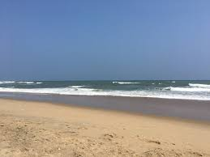

Silver Beach is a serene, 2-km long coastline on the Bay of Bengal, located just 2 km from downtown Cuddalore, Tamil Nadu. It is an ideal, relatively uncrowded spot for evening strolls, viewing the sunset, and enjoying gentle sea breezes.